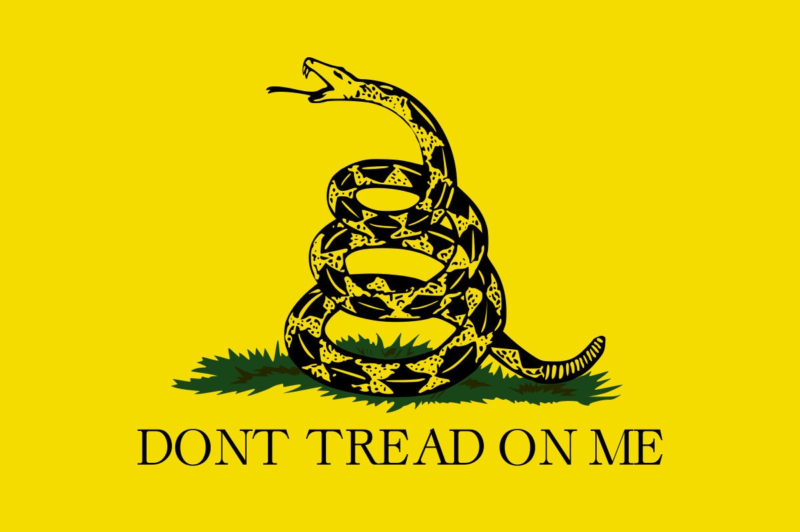
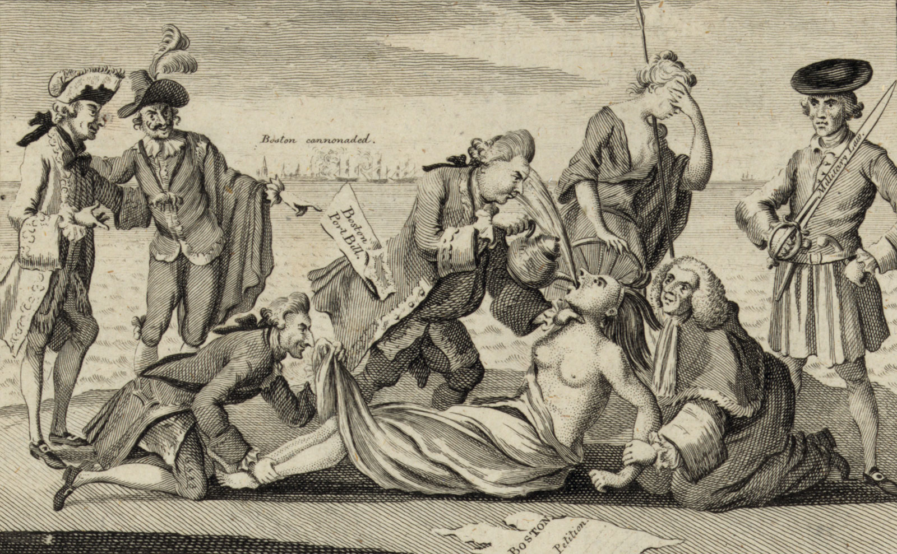
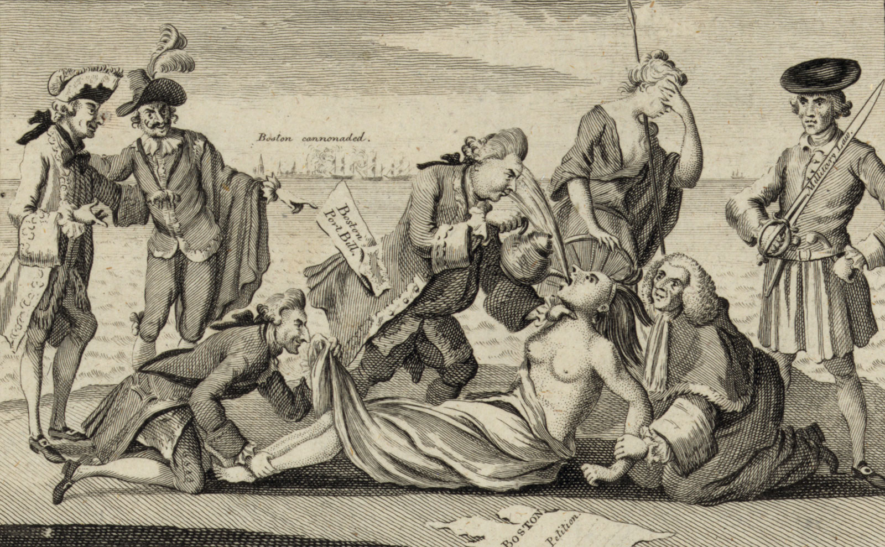
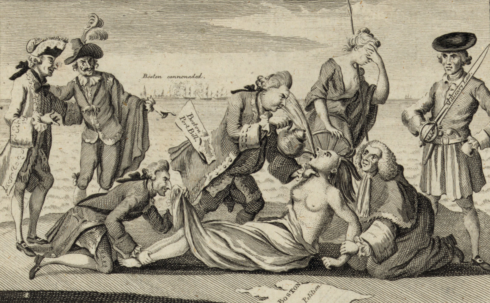

The colony of Massachusetts was seen by King George III and his ministers as the hotbed of disloyalty. After the Boston Tea Party (December 16, 1773), Parliament responded with the Intolerable Acts (1774), a series of punitive measures that were intended to cow the restive population into obedience. The 1691 charter of the Massachusetts Bay Colony was abrogated, and the colony’s elected ruling council was replaced with a military government under Gen. Thomas Gage, the commander of all British troops in North America. At Gage’s headquarters in Boston, he had four regiments—perhaps 4,000 men—under his command, and Parliament deemed that force sufficient to overawe the population in his vicinity. William Legge, 2nd earl of Dartmouth, secretary of state for the colonies, advised Gage that "the violence committed by those, who have taken up arms in Massachusetts, have appeared to me as the acts of a rude rabble, without plan, without concert, without conduct."
From London, Dartmouth concluded that "a small force now, if put to the test, would be able to conquer them, with greater probability of success, than might be expected of a larger army, if the people should be suffered to form themselves upon a more regular plan."
Gage, for his part, felt that no fewer than 20,000 troops would be adequate for such an endeavour, but he acted with the forces he had at hand. Beginning in the late summer of 1774, Gage attempted to suppress the warlike preparations throughout New England by seizing stores of weapons and powder. Although the colonials were initially taken by surprise, they soon mobilized. Groups such as the Sons of Liberty uncovered advance details of British actions, and Committees of Correspondence aided in the organization of countermeasures. Learning of a British plan to secure the weapons cache at Fort William and Mary, an undermanned army outpost in Portsmouth, New Hampshire, Boston’s Committee of Correspondence dispatched Paul Revere on December 13, 1774, to issue a warning to local allies. The following day, several hundred men assembled and stormed the fort, capturing the six-man garrison, seizing a significant quantity of powder, and striking the British colours; a subsequent party removed the remaining cannons and small arms. That act of open violence against the crown infuriated British officials, but their attempts to deprive the incipient rebellion of vital war matériel over the following months were increasingly frustrated by colonial leaders who denuded British supply caches and sequestered arms and ammunition in private homes. On April 14, 1775, Gage received a letter from Dartmouth informing him that Massachusetts had been declared to be in a state of open revolt and ordering him to “arrest and imprison the principal Actors and Abettors in the [Massachusetts] Provincial Congress.” Gage had received his orders, but the colonials were well aware of his intentions before he could act.
TAKE UP ARMS!



 

